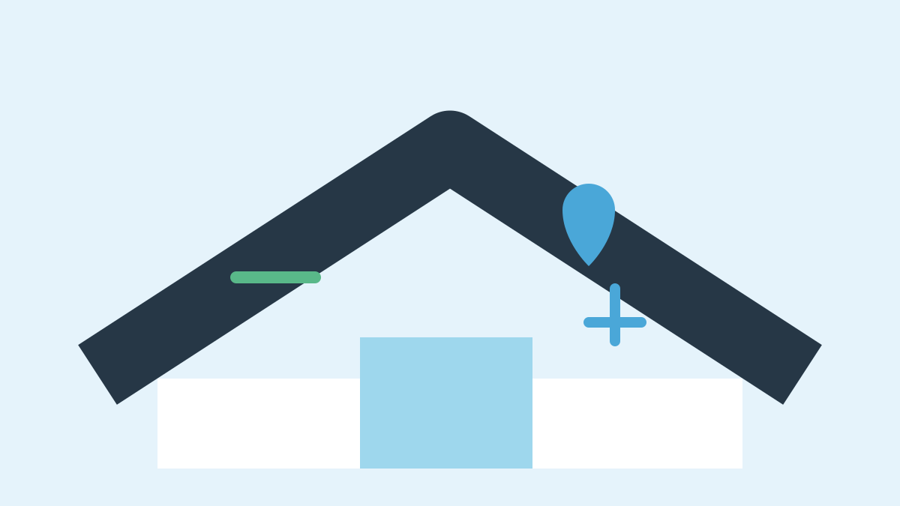

What to Do Immediately When Your Miami Roof Leaks
A roof leak in Miami can turn a small roofing problem into interior water damage quickly. Your first goal is safety and damage control—not climbing onto the roof to make a risky DIY repair.
6 steps to take when your roof starts leaking
- Protect people first. Keep clear of unsafe ceilings, wet electrical areas and damaged roof sections.
- Contain interior water. Use containers and move belongings away from the leak when safe.
- Document the damage. Take photos or video of the affected rooms and visible roof damage from a safe location.
- Reduce additional damage. Use reasonable temporary measures only when they can be done safely.
- Contact your insurer if appropriate. Keep records of emergency work and expenses.
- Call a professional roofer. A roof inspection can identify the source and determine whether repair or replacement is needed.
Do not climb onto a leaking or storm-damaged roof
Roof surfaces can be slippery and structural damage may not be obvious. If the roof has major storm damage, sagging, exposed decking or other safety concerns, stay off it and arrange professional assessment.
What causes a roof leak?
Possible causes include damaged or missing roofing materials, flashing failures, penetrations, drainage problems and storm damage. Water can travel before it appears on an interior ceiling, so the visible stain is not always directly below the roof defect.
When is a roof leak an emergency?
Active water entry, a rapidly growing interior leak, major storm damage, exposed roof areas or structural concerns deserve prompt attention. See our emergency roof repair service.
Frequently asked questions
Should I patch a roof leak myself?
A temporary measure may reduce additional damage when safe, but climbing onto a roof can create serious injury risk. A professional inspection is the better next step.
Should I take pictures before repair?
Yes, when safe. Photos and video can help document the condition for your own records and, where applicable, an insurance claim.
Can a leaking roof always be repaired?
No. Some leaks are localized and repairable, while widespread deterioration or major storm damage may require replacement.
Request Miami Roof Leak Help →Sources and further reading
- Ready.gov — Emergency preparedness
- National Roofing Contractors Association (NRCA)
- FEMA — Disaster recovery resources
Related guides
Roof repair · Emergency roof repair signs · Roof insurance claims